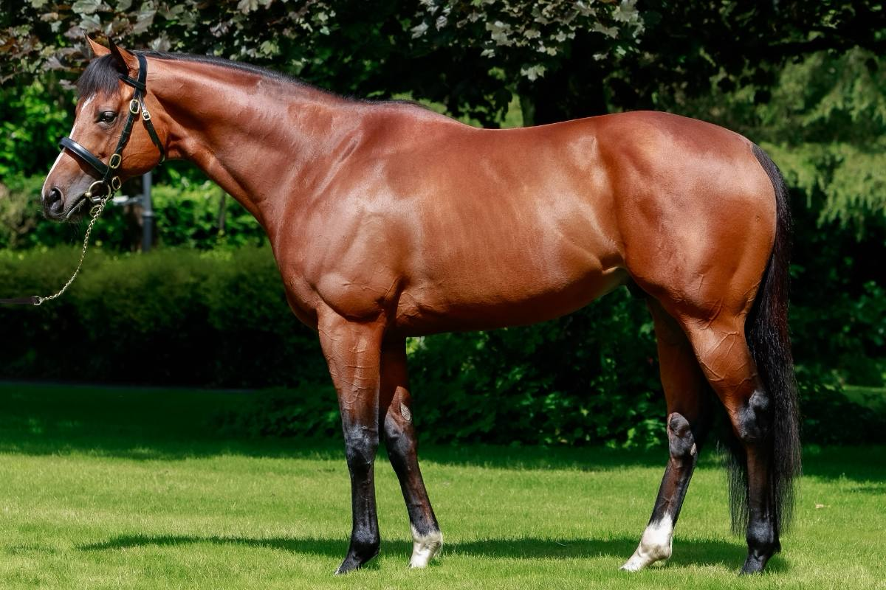

Hijos de Starman y St Mark's Basilica encabezan la subasta Breeze Up de Tattersalls Ireland
Los productos de los sementales europeos Starman y St Mark's Basilica han liderado las pujas de la subasta Tattersalls Ireland Breeze Up Sale, celebrada el 22 de mayo en el centro de ventas de Fairyhouse. La cita reúne purasangres de dos años que pasan previamente por una "breeze up", exhibición de galope a alta…

Los productos de los sementales europeos Starman y St Mark's Basilica han liderado las pujas de la subasta Tattersalls Ireland Breeze Up Sale, celebrada el 22 de mayo en el centro de ventas de Fairyhouse. La cita reúne purasangres de dos años que pasan previamente por una "breeze up", exhibición de galope a alta velocidad ante compradores y agentes.
La presencia destacada de ambos sementales confirma su tirón comercial en el mercado europeo de cría. Starman, ganador del Diamond Jubilee Stakes (G1) de Royal Ascot en 2021, debutó como semental en Tally-Ho Stud en 2022 y comienza a ver llegar a la pista a su primera generación. St Mark's Basilica, doble campeón clásico francés en 2021 (Prix du Jockey Club y Prix Ganay), retira a sus primeros productos al ring tras su retirada al haras de Coolmore.
La sesión registró además operaciones de relevancia entre compradores irlandeses y británicos, en una jornada que cierra el ciclo de subastas europeas de dos años trotados antes del inicio del calendario veraniego de pruebas clásicas. Las cifras detalladas se publicarán íntegras en el portal oficial de Tattersalls Ireland.
— Redacción de Galope al Día